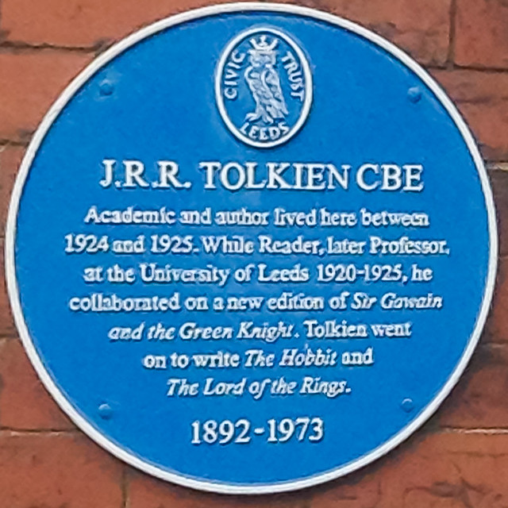

What are blue plaques?
(openplaques, 2021)
The blue plaque scheme serves as a reminder of places or people of interest, they are typically accompanied by a snippet of context information to best describe their influence and achievements within the context of their associated city (BBC, 2016). The original scheme was founded in 1866 and according to English Heritage has inspired many similar schemes not just in the UK but also around the world (English Heritage, 2021). While originating in London many prominent cities have Blue plaques erected to commemorate events and people such as Birmingham and Leeds.The Leeds branch of the blue plaque scheme was created by the Leeds Civic Trust in 1987 (Headingley Leeds, 2019).
References:
BBC News. 2016. Who deserves a blue plaque?. [online] Available at:
English Heritage. 2021. Blue Plaques | English Heritage. [online] Available at:
Headingley Leeds. 2019. Blue Plaques — Headingley Leeds. [online] Available at:
Plaques, O., 2021. J. R. R. Tolkien blue plaque. [online] Openplaques.org. Available at:
For more information please search below:
Data avaliable at: